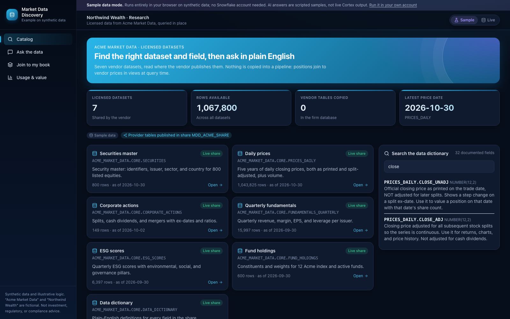
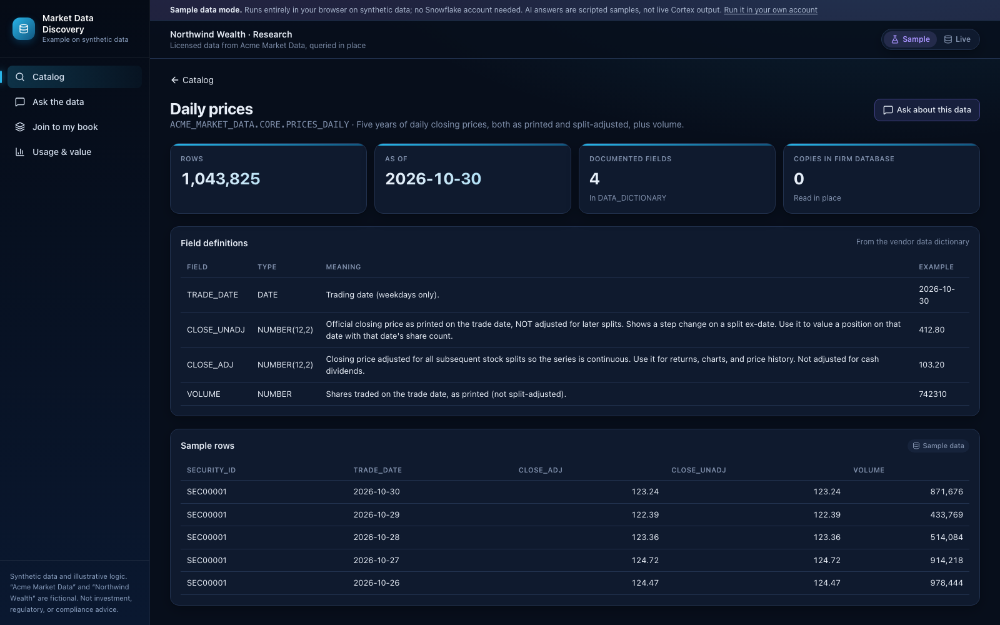
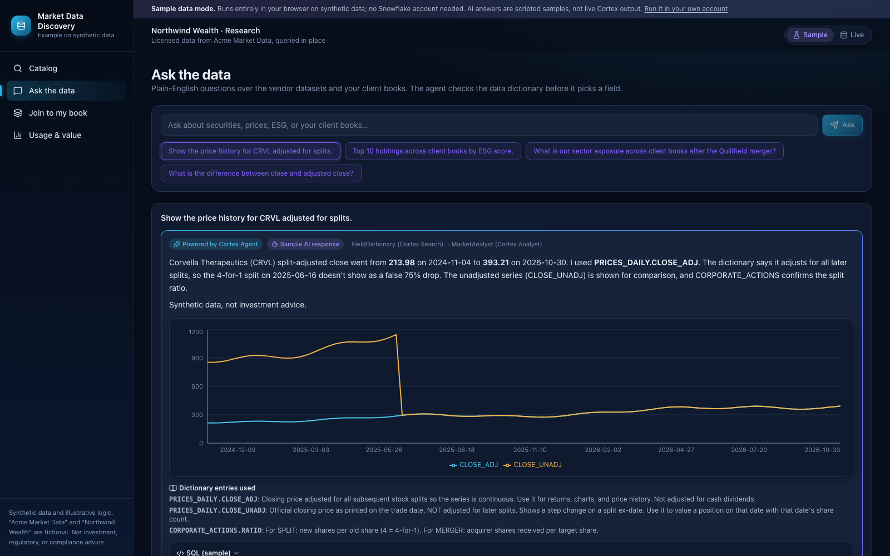
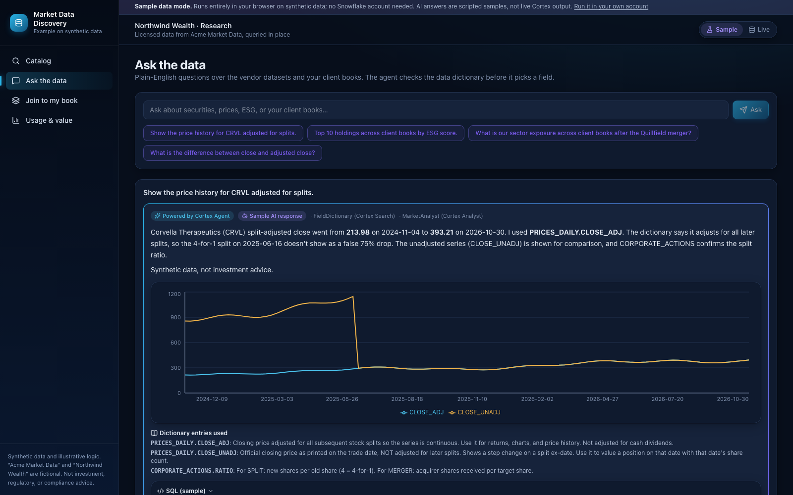
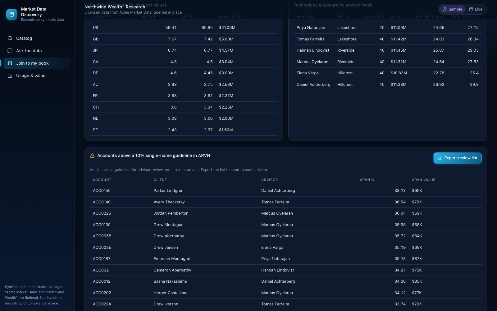
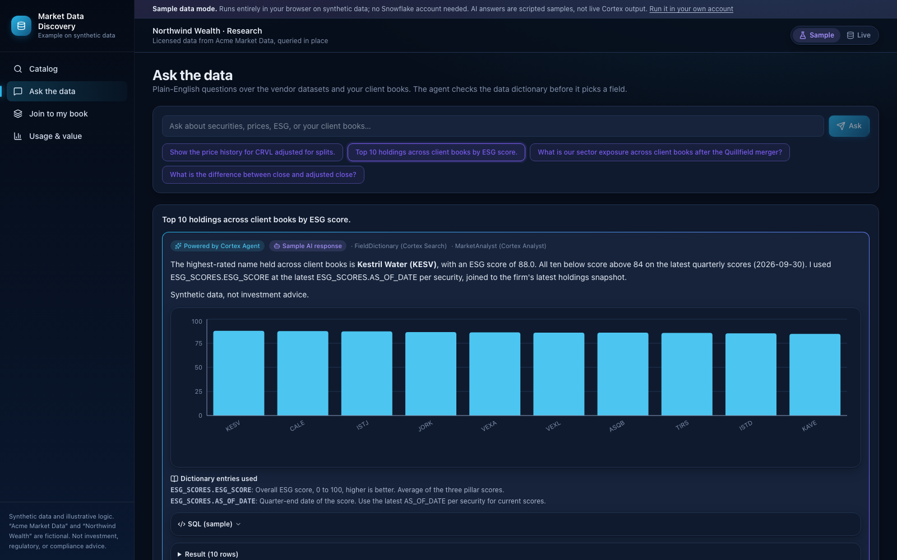
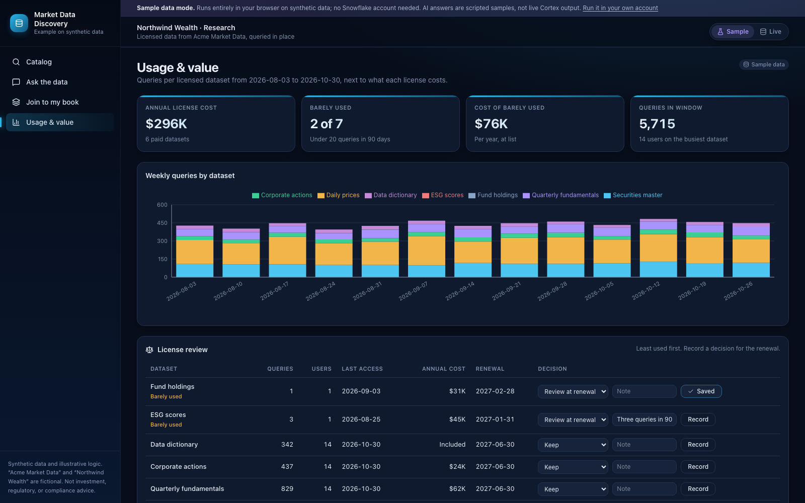

Find, understand, and query licensed market data in plain English, where it already lives
Firms license market, reference, and fundamentals data from vendors, then spend months moving it through files and ETL. Even after it lands, analysts can't tell which table holds an issuer's sector, or whether to use close or adjusted close, without a data engineer. This example reads a vendor's datasets in place. An agent checks the vendor's data dictionary, answers questions with a chart, the SQL, and its sources, joins the data to client books, and shows which licenses are barely used.
Synthetic data, illustrative logic. "Acme Market Data," "Northwind Wealth," and every issuer, ticker, fund, and client are fictional. Identifiers use a "ZZ" prefix so they can't match real ISINs. This is not investment, regulatory, or compliance advice, and it isn't a production system.
Who it's for
Research analysts
Find the right dataset and field, then ask "show the split-adjusted price history" or "top holdings by ESG score" in plain English.
Market data managers
See queries, users, and last access for every licensed dataset next to its cost, and record keep or review decisions for renewal.
Data engineers
Skip the ingestion pipeline: the firm's views and semantic view read the vendor tables where they are.
Walkthrough
Screenshots of the app in no-account mode. AI answers there are labeled "Sample AI response". In live mode the same screens run on Snowflake and the agent answers for real.








How it works
Everything below ran live in a Snowflake account as a least-privilege role (MDD_ANALYST_ROLE) before publication.
| Step | Snowflake capability | What it does here |
|---|---|---|
| Vendor publishes data | Secure Data Sharing | Setup creates the vendor's provider database ACME_MARKET_DATA and the share MDD_ACME_SHARE. In production you'd mount a vendor's share or a Snowflake Marketplace listing instead. |
| Firm reads it in place | Views and a semantic view | POSITIONS_VALUED joins client holdings to vendor prices at query time. MARKET_DATA_SV describes vendor and firm tables for Cortex Analyst. No vendor table is copied into the firm database. |
| Agent checks the dictionary | Cortex Search | Indexes the vendor's DATA_DICTIONARY, so the agent can tell CLOSE_ADJ from CLOSE_UNADJ and cite the definition. |
| Agent answers | Cortex Agents with Cortex Analyst | Plans, searches the dictionary, writes SQL on the semantic view, runs it as the caller's role, and returns text, a result table, and the SQL. |
| License usage | ACCOUNT_USAGE.ACCESS_HISTORY | A view limited to the vendor tables counts real queries in your account (Enterprise Edition, up to about 3 hours of lag). A synthetic 90-day log supplies the history a new account doesn't have. |
About the share in this example. Snowflake doesn't let an account mount its own share, so the example plays both sides in one account. It creates a real share you can add a second account to. The firm-side role gets exactly the grants the share carries and queries the provider tables directly. Either way the data isn't copied; the README shows how to point the app at a mounted share.
Get started
No account (2 minutes)
Open the hosted example, or run it locally:
git clone https://github.com/sfc-gh-ooral/sfguide-market-data-discovery.git
cd sfguide-market-data-discovery
npm install && npm run devLive mode in your account
- Run
sql/setup.sqltop to bottom in a Snowsight worksheet as ACCOUNTADMIN. - Register a key pair on your user and copy
.env.exampleto.env.local. - Run
npm run devand switch the header to Live. - When you're done, run
sql/cleanup.sql.
Full steps, objects created, and least-privilege details are in the README.
Limits and disclaimer
- One account plays vendor and firm, as described above. Cross-account sharing and Marketplace listings aren't exercised here.
- Daily prices are computed from a formula, not real markets. Splits and the merger are planted to tell the story.
- Agent answers can vary between runs. Each one shows its SQL and sources so you can check it.
- The 10% single-name guideline is illustrative, not a rule or recommendation.
This is an illustrative example provided as-is under the Apache 2.0 license. It isn't an official Snowflake product and isn't supported by Snowflake Support. It contains no customer data. Review and test before any production use.